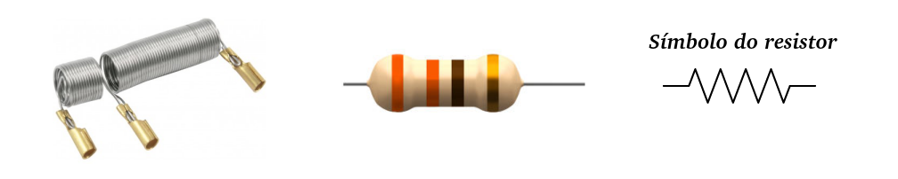
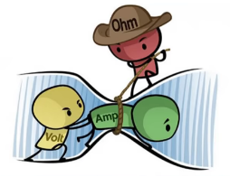
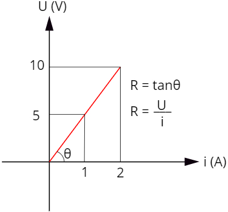

Aula10-78: Primeira lei de Ohm
Resistência elétrica (R)
É uma grandeza física que indica a tensão necessária para gerar uma corrente elétrica de 1 A através de um objeto qualquer (um condutor, um dispositivo eletrônico, etc.) ou, em outras palavras, podemos dizer que esta grandeza exprimi o quão difícil é a movimentação de elétrons em um corpo qualquer.
A unidade de medida para resistência elétrica no SI é o:
Obs.: Muto raramente, fala-se também em condutância, que é uma grandeza que indica o quão condutor um corpo é. A condutância elétrica é justamente o inverso da resistência:
A unidade de medida para condutância elétrica no SI é o:
Efeito Joule
Ao impormos uma alta corrente a um determinado material; esta corrente pode ocasionar um aquecimento da matéria e, este aquecimento, por sua vez, tornará o material ainda mais resistente a passagem de corrente, tornando-o mais quente ainda. Este processo, em que há energia elétrica se convertendo em energia térmica, é chamado efeito Joule.
Resistor
Resistores são dispositivos elétricos projetados para transformar energia elétrica em energia térmica por meio do efeito joule.

Obs.: Praticamente todos os dispositivos que aquecem ou iluminam possuem em seus interiores resistores que, por meio do efeito joule, aquecem e/ou irradiam luz no espectro do visível.
➔ RESISTOR ÔHMICO
Chamamos de resistor ôhmico o dispositivo cuja resistência é constante para diferentes tensões e correntes; isto é, um resistor ôhmico é aquele que sempre cumpre a expressão:
Primeira lei de Ohm
|
É a lei que define o conceito de resistencia elétrica; pois, segundo esta expressão, a resistência de um circuito é a razão entre tensão e corrente: Podemos ainda lê-la assim: para circuitos compostos exclusivamente por resistores ôhmicos, a intensidade de corrente elétrica que percorre um condutor é diretamente proporcional a tensão aplicada sobre ele. A resistência é a constante de proporcionalidade da relação. Veja a equação:
|
 |
➔ GRÁFICO TENSÃO X INTENSIDADE DE CORRENTE
|
 |
Se plotarmos um gráfico da tensão pela corrente elétrica, obteremos uma reta cuja inclinação é determinada pelo valor da resistência elétrica. |
Potência no resistor
Potência elétrica é uma grandeza que indica a quantidade de energia fornecida ou retirada de um corpo por unidade de tempo. Em se tratando de potência elétrica, referimo-nos a quantidade de energia elétrica que é transformada em outros tipos de energia com um propósito qualquer; calculamos a potência através da fórmula:
a partir desta expressão, podemos obter também:
ou então: